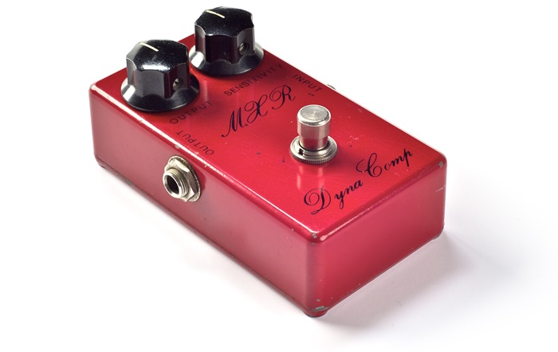
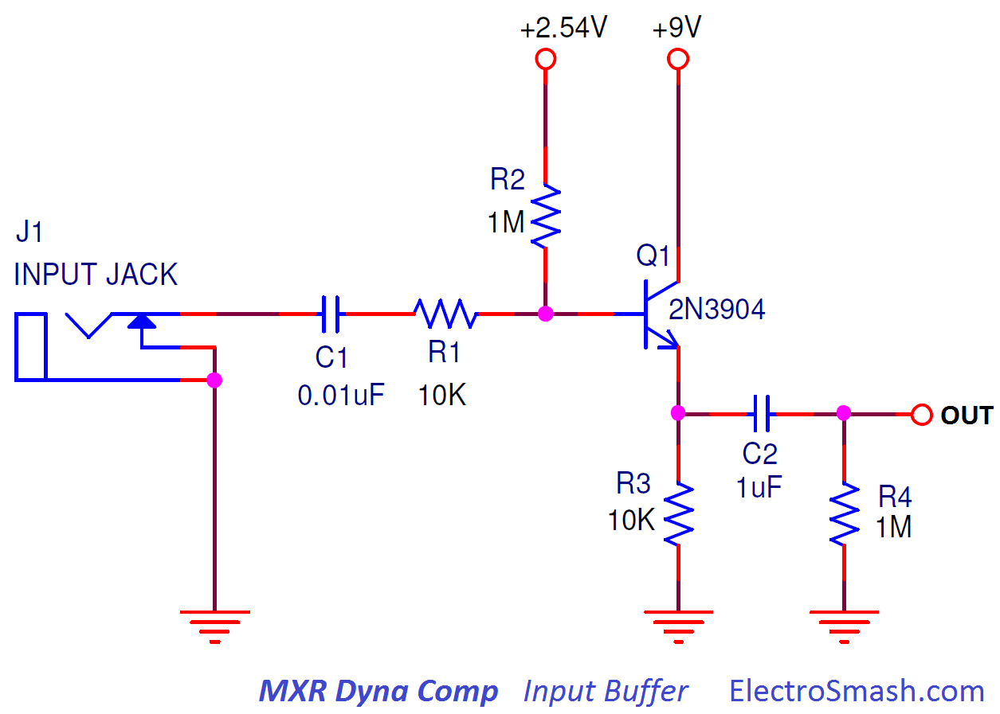
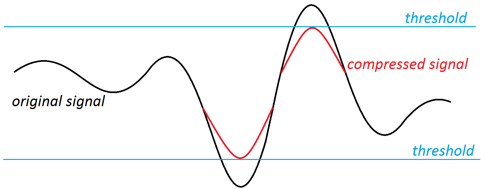
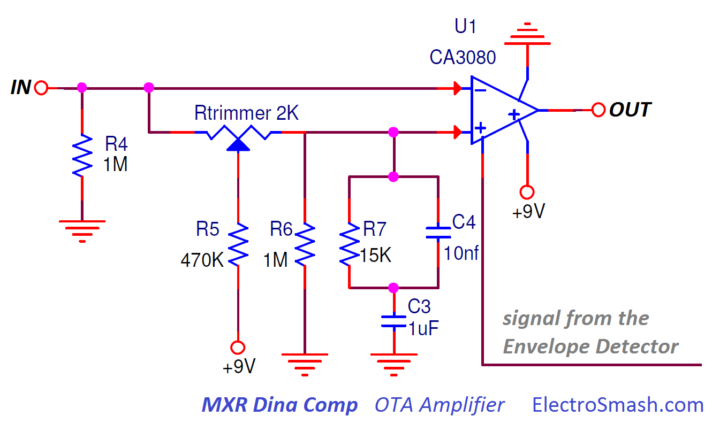
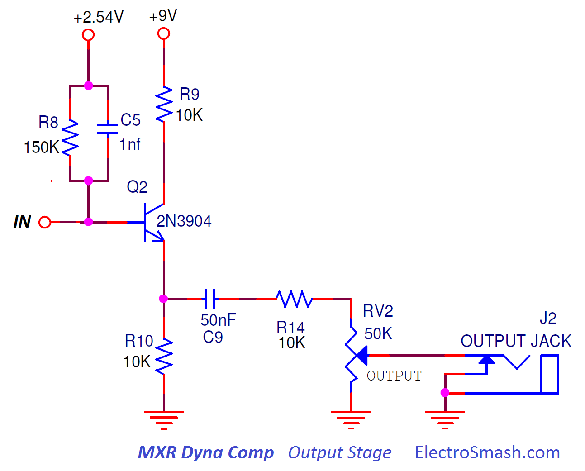

The MXR 102 Dyna Comp is a compressor effect guitar pedal, released in 1972 by MXR and rapidly becoming popular because of its price and ease of use. The electronic circuit was also used as a reference design on many other compressor effects like the Ross Compressor, T-Rex CompNova, Ibanez/Maxon CP5/CP9/CP10 and boutique pedals. This model is neither the most silent nor the most hi-definition piece of gear but it has real character and it's easy to find.

Table of Contents:
To make the circuit easier to understand, it is divided into 5 blocks: Input Buffer, OTA Amplifier, Envelope Detector, Output Stage and Power Supply:
The main design idea is this: The Input and Output Buffers isolate the circuit, keeping good signal integrity. The core of the circuit is the OTA amplifier, this part will give higher or lower amplification to the signal. In order to decide the amount of amplification, the Envelope Detector will measure how big or small the guitar signal is at a time and gives to the OTA a current feedback proportional to the guitar level, amplifying weak signals.The simple Power Supply provides energy and bias points to all the circuit parts.
note: The circuit is redrawn trying to make it simpler. Usually, the Envelope Detector stage is represented in parallel looking like a Long Tailed Pair or a Differential Amplifier that could be misleading.
1.2 MXR Dyna Comp Part List / Bill of Materials.
The parts in the design are not critical, you can use substitutes for the transistors (2N3904) or the silicon diodes (1N914). The only part which is not so easy to find nowadays is the CA3080 IC.
C1 0.01uF
C2,C3 1uF
C4,C6,C7 10nF
C5 1nf
C8,C10,C11 10uF
C9 50nF
Q1,Q2,Q3,Q4,Q5 2N3904
D1,D2 1N914
D3 1N4148
RV1 500K
RV2 50K
Rtrimmer 2K
R1,R3,R9,R10,R14 10K
R2,R4,R6,R11,R12 1M
R5 470K
R7 15K
R8,R13 150K
R17 27K
R15 56K
R16 22K
U1 CA3080
J1, J2 Audio Jacks
1.3 MXR Dyna Comp PCB Layout.
The original MXR Script model which is not available nowadays uses the classic MXR white/yellow PCB with a distinctive shape. It was a one layer PCB with all the components on one side. When Dunlop acquired MXR in 1987, the PCB was progressively redesigned using modern materials/components and a double-sided PCB with red solder mask.
The Power Supply block provides +9V supply to the circuit components and also an unusual bias of +2.5V with resistor divider (R15 and R16) to be used as a virtual ground to the CA3080 and also as a bias voltage for the transistor stages:
- Seems that the original design did not include decoupling caps in the power supply, but a moderate-high value 10uF caps (C10 and C11) could be included to remove noise from the power supply line.
- A protection diode D3 helps against reverse polarity connection. Some schematics include this diode in series and some in parallel with the 9V source, both ideas will work fine.
- A stereo guitar input jack could be used as an on-off switch, connecting the battery (-) pin to ground when the mono guitar jack is plugged.
3. Input Buffer.
The Input Buffer is implemented using a basic Common Collector (Emitter Follower) transistor circuit. It provides high input impedance and unity gain in order to preserve signal integrity avoiding high-frequency signal loss (tone sucking). 
- The base of the transistor is biased to 2.54V through a high-value resistor R2 (1MΩ).
- The input series resistor R1 (10KΩ) will limit the amount of current into the base of the transistor, protecting Q1 against electrostatic discharges and making the pedal more robust.
- The input capacitor C1 (10nF) gives DC isolation and together with R2 (1MΩ) - R1 is ignored because 10K is much smaller than 1M - and the input impedance of the Emitter Follower (equal to 1MΩ and calculated in the next point) creates a high pass filter:
fc= 1/2πRC = 1/(2 x 3.14 x (1MΩ//1MΩ) x 10nF) = 31.8Hz -
The output of this buffer is DC isolated through the capacitor C2 (1uF). This C2 and R4 form again a high-pass filter with a cut frequency of fc=1/2πRC = 1/(2π x 1uF x 1MΩ) = 0.15Hz. This filter will DC-isolate the next stage without modifying the audio levels.
MXR Dyna Comp - Input Impedance Calculation:
In order to calculate the input impedance of the Emitter Follower, the hybrid-pi model can be used to analyze the small signal behavior. If you want to get all the details, please check the Tube Screamer Input Impedance Calculation, it is basically the same circuit with some changes in the components values, otherwise just stick to the general formula:
Zin = R1 + ( R2 // [rπ + (β+1) x R3])
Zin = 10K + 1M // [rπ + (300+1) x 10K]
Zin = 1MΩ
note: The value of β is 300 (taken from the 2N5088 datasheet), the value of rπ is very small compared with the value of (β+1)xR3 and can be considered as 0 (ignored).
Therefore, the MXR Dyna Comp input resistance is 1MΩ (almost the value of the biasing resistor R2) which accounts for almost the entire signal loading at the input and can be considered a good/high input impedance.
3.1 Input Buffer Frequency Response.
The plot of the Input Stage freq response shows a unity gain and a filtering of the excess of bass (dc-level), preserving a good flat response between 20Hz and 20KHz.
The low frequencies area is dominated by the high-pass filters that place two poles on 3.1Hz and 0.15Hz creating a roll-off for the low harmonics. This filters will just remove DC-offset at the input and between stages, the audio band (20Hz to 20KHz) is not touched.
4. The OTA Amplifier.
The OTA Amplifier is the heart of this effect.
To understand its functionality, it is important to understand the concept of how an audio compressor works:
- The principle of an audio compressor is to modify the volume of the guitar signal, attenuating the peaks and reducing the span between the softest and loudest sounds. There is a defined point threshold above which the signal gets reduced (contrary to distortion effects where the signal gets clipped/squashed and distorted).

The aim of the OTA is to apply a variable gain to the original guitar signal, giving more amplification to weak signals and less to the hi-level waveforms. This amount of gain is set by the current bias pin 5 of the CA3080 and generated in the next stage (Envelope Detector) 
- The CA3080 has a differential input, it amplifies the current differences between the inverting (-) and non-inverting (+) inputs.
- The 2K trimmer resistor adjusts the bias currents of the OTA differential inputs, trying to make a perfectly balanced OTA. Imbalances in the + and - input pins can make the OTA noisy as the signal change levels. In practice, this trimmer is adjusted to the middle position and in very very very rare occasions it is adjusted to any other value.
- The bias point for the inverting and non-inverting input is around 4V, the image below can help to understand how to calculate this bias point:
- The input resistance of the CA3080 inputs (Zin) depends on the amplifier bias current, looking at the "input resistance VS amplifier bias current" it can be seen that the Zin has a middle value of around 1M.
With the simplified middle circuit, the bias at the input of the CA3080 (Vx) can be calculated as:
Vx= R5 *[9V/(R5+(R4//Zin//Zin//R6))] = 470 * [9V/(1M//1M//1M//1M)] = 3.1V
note: The Rtrimmer is ignored because its value is much smaller than R4, R5, R6 or Zin.
Usually, the bias point sits around 3~4V (depending on the CA3080 current bias pin)
CA3080 input Filter.
There is a filter in the non-inverting input: R7(15KΩ), C3(1uF) and C4(10nF) that creates a low pass filter making the frequency response to be different in each input:
The blue line (CA3080 positive input) level is slightly smaller (~1dB) than the negative input, it is due to a small signal bleed through the Rtrimmer and R5/R6. This OTA chip amplifies the voltage difference at its input pins:
- The freq response at pin 2 (-) is flat.
- The freq response signal at pin 3 (+) reduces the high-frequency harmonics because of the filter created by C3 (1uF), C4 (10nF) and R7 (150K).
This frequency response is very important because it tailors the tone character of the pedal. It is important to understand that the CA3080 will amplify the difference between the red and the blue line. At mid/low freqs (let's say 300Hz) the difference is small (1dB) but at high freqs (let's say 10KHz) the difference is bigger (4dB) so the output generated will be also bigger.
In the image below you can see the input voltages VS the output voltage:
As mentioned before, the output of the CA3080 will be bigger at high frequencies because the voltage difference of its inputs is also bigger at high freqs. This will give a general high freq boost to the tone of the effect.
The C5 cap (1nF) cap placed at the output of the OTA will smooth out the excess of hash high harmonics, in orange and red the difference can be observed.
This equalization is often attributed to a pre-emphasis / de-emphasis method to reduce noise (the CA3080 is a pretty noisy part) and also will give some signature to the sound of the pedal.
MOD: Some users lower or remove the 0.001uF C5 cap to give the circuit full or emphasized top end response (values between 100pF to 470pF or completely removing it).
4.1 The OTA Chip: CA3080.
The OTA is implemented using the CA3080, this part was the first commercially available OTA by RCA in 1969, manufactured also by Intersil/Harris and discontinued nowadays.
Transconductance is a way to measure the gain of an amplifier relating the input voltage with the output current and usually designated with the letter gm and measured in Siemens. In a nutshell, the CA3080 is basically an amplifier whose differential input voltage produces an output current.
We are not describing in detail how everything works inside the CA3080, there is a fantastic application note by Intersill that describes how it works, and some other works that can give you more details about the internal electronics of the IC.
5. Envelope Detector Block.
This block provides the current feedback to the OTA amplifier in order to create the compression effect:
- The base of the Q2 transistor is biased to 2.5V through the R8 transistor.
- The C5 (1nF) capacitor removes the excess of treble, rounding the sound, there are more details in the previous OTA Amplifier block.
- After the OTA amplifier, the guitar signal is doubled using a common collector transistor in a phase splitter topology, so at the points OUT_1 and OUT_2 the input signal is doubled with the same amplitude (gain=1) and opposite phase.
- After the phase splitter, 2 networks in parallel will average out the guitar signal, both the positive/negative semi cycles creating a unipolar signal (because it goes from 0 to 9V). This averaged value will indicate how loud the guitar signal is:
Above image: the averaged signal in blue color (measured at the C8 cap) changes following the amplitude of the guitar signal in purple/green colors (measured after the phase-splitter at R11 and R12):
- When the level of the guitar signal starts to rise (at around 1Vpp), the blue averaged signal decreases from 9V to 0V, giving less current feedback to the OTA.
- The signal is high pass filtered in parallel with C6 & R11 and C7 & R12 and the diodes D1 and D2 will protect the base of the transistor from negative voltages (the diodes are just clamping diodes that ground the base of the transistor under damaging negative voltages).
MOD: Disconnecting C7: If you check the full schematic the output of the pedal is also connected to the emitter of Q2. The D2 diode could clip the output signal making the signal distorted, this is why some people decide to remove the bottom envelope detector (by disconnecting C7) and just use the top one. The side effect is the fact that using half-wave rectification leads to some envelope ripple on lower notes during the decay of held notes
- The transistors Q4 and Q5 work as switches, when the voltage at their bases is over the Vbe (0.6V typ), the transistor will conduct allowing the current to flow through the R13 resistor (150K). The big C8 capacitor (10uF) will act as a low pass filter, making the voltage at the base of Q5 to change slowly and follow the general envelope of the guitar signal.
MOD: The attack mod makes the effect more flexible to play different styles of music. It can be done replacing the 150KΩ R13 resistor with a 10k+150k pair in series or using a toggle switch to select different values i.e 150KΩ or 10KΩ.
6. Output Stage.
The output signal is taken from the emitter of the phase splitter Q2 simplifying the circuit and using less parts. 
- The output series capacitor C9 (0.05uF) will remove all the DC voltage. It also forms a high past filter together with the resistor R14 and VR2.
- The cut frequency of the output low-pass filter changes slightly with the level potentiometer (RV2). This fc calculation is not easy because the interaction between R14 and RV2 does not allow to use the simple formula fc=1/2piRC. However, in the real application this fc is:
- fc min with (RV2 max 50KΩ) = 52Hz
- fc max with (RV2 min 1) = 310Hz
MOD: The output series 0.05uF capacitor C9 can be enlarged to a 1uF to give to the effect a full bottom end response.
7. Resources.
CA3080 Datasheet.
CA3080 Application Note (AN6668).
Don Tillman great article about the CA3080 background. (Mirror)
MXR Dynacomp mods by JC Maillet
Dyna/Ross Clones and Variations. (Mirror)
Thanks for reading, all feedback is appreciated. My sincere appreciation to Eric (ontheroadeffects), C. Chiuchiolo and Dror S. for your support.

Some Rights Reserved, you are free to copy, share, remix and use all material.
Trademarks, brand names and logos are the property of their respective owners.


{kind=link}
{kind=link}
{kind=link}
{kind=link}
{kind=link}
{kind=link}
{kind=link}
{kind=link}
{kind=link}
{kind=link}
{kind=link}
{kind=link}
{kind=link}
{kind=link}
{kind=link}
{kind=link}
{kind=link}